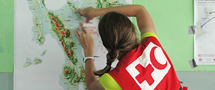
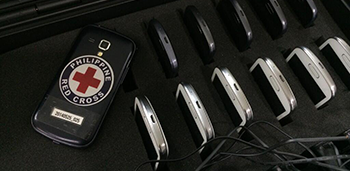
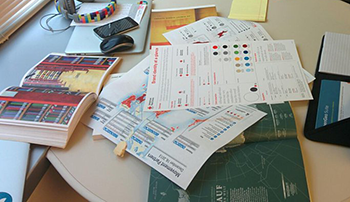

Internal Resources

SIMS one pager
gives a concise overview of SIMS activites, products and services.
EN

Activation flow
describing the steps of SIMS support: activation, response and transition.
EN

Tips and recommendations
for better information management.
EN or

Disaster information cycle
explained in an infographic.
EN

Menu of services
detailing different types of SIMS products and services.
EN
